An introduction to the theory of Spectral Submanifolds
Contents
First order dynamical systems
We consider dynamical systems of the form
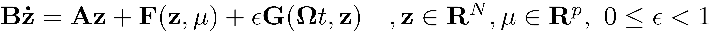
Any first order ODE with smooth right hand side can be brought to this standard form around its fixed points. After an initial translation to set a fixed point to the origin of the coordinate system, the right hand side can be expanded as a Taylor series which yields the desired form. Here 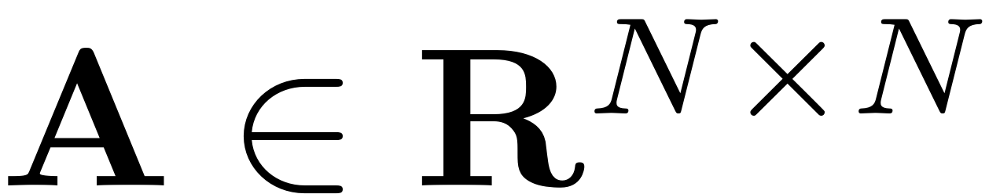 is the linear part of the dynamical system. Throughout the dynamical systems literature the matrix 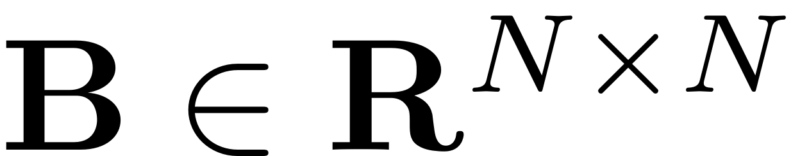 is often taken to be the identity. We do not make this assumption and treat the general case, which leads to computational advantages for dynamical systems that stem from second order ODEs as the inversion of possibly large system matrices can be avoided this way.  is a vector valued nonlinear function and assumed to be 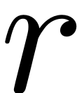-times continuously differentiable in and a set of parameters . is a non-autonomous and possibly non-linear function which contains the time-dependent forcing that is acting on the system. This forcing may for instance include direct, parametric, gyroscopic or velocity-dependent terms.
is a vector valued nonlinear function and assumed to be 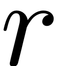-times continuously differentiable in and a set of parameters . is a non-autonomous and possibly non-linear function which contains the time-dependent forcing that is acting on the system. This forcing may for instance include direct, parametric, gyroscopic or velocity-dependent terms.
Second order mechanical systems
Invariant manifolds such as SSMs can also be computed in the phase space of second order mechanical systems. These look as follows
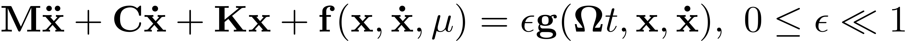
The linear part of the system is characterised by 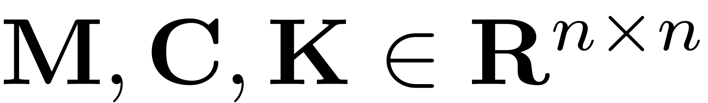 which denote the mass, damping and stiffness matrices, respectively. The function 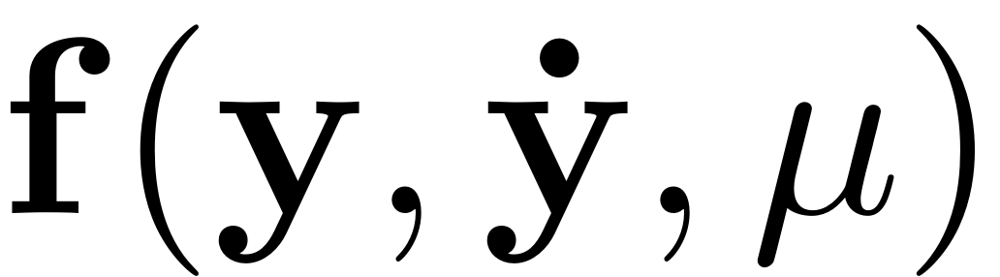 is a nonlinear function that is times continuously differentiable with 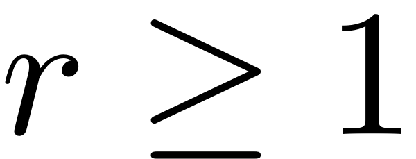.The distinct types of time-dependent forces are represented by general forcing vector . The second order form can be rewritten to the first order form, for instance by choosing
![$$\mathbf{z} = \left[ \begin{array}{c} \mathbf{x} \\ \dot{\mathbf{x}} \end{array}
\right], \quad \mathbf{A} = \left[ \begin{array}{c} -\mathbf{K} \quad \mathbf{0}
\\ \mathbf{0} \quad \mathbf{M} \end{array} \right], \quad \mathbf{B} = \left[ \begin{array}{c}
\mathbf{C} \quad \mathbf{M} \\ \mathbf{M} \quad \mathbf{0} \end{array} \right], \quad
\mathbf{ F(z)} = \left[ \begin{array}{c}- \mathbf{f(x,\dot{x})} \\ \mathbf{0}
\end{array} \right], \quad \mathbf{ G}(\mathbf\Omega t, \mathbf{z}) = \left[
\begin{array} {c} \mathbf{g}(\mathbf\Omega t,\mathbf{x},\mathbf{\dot{x}}) \\
\mathbf{0}\end{array}\right]$$](SSM_Theory_eq01052373293453443383-Rescaled.png)
This choice to obtain the first-order form is not unique (cf. Jain & Haller, 2021) but all such forms can be used for the computation of SSMs. No assumption has to be made about the magnitude of the nonlinearities as the results presented here are valid for nonlinearities of any magnitude, the curvature of the computed manifolds depends smoothly on the magnitude of the nonlinearities.
Linear Part of the System
It is necessary to make an assumption on the spectrum of the two constant matrices  and
and  . Consider the linear part of the dynamical system which is given as
. Consider the linear part of the dynamical system which is given as
We assume that the two matrices are simultaneously diagonalisable, that is, there exist 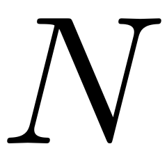 eigenvalues and left as well as right eigenvector pairs. In contrast to the full spectrum, small subsets of eigenvalues and their corresponding generalised eigenvectors can be computed efficiently even for large systems (cf. Golub & van Loan, 1996). We thus consider a subset of 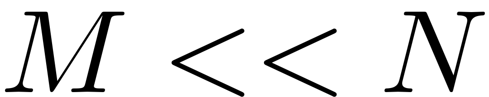 eigenvalues given as
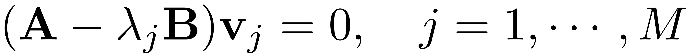
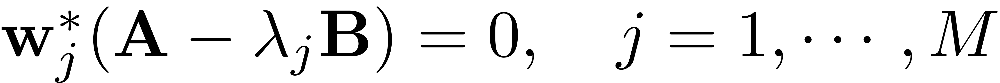
We arrange these eigenvectors in the increasing order of magnitudes of the real parts of the associated eigenvalues, i.e.,
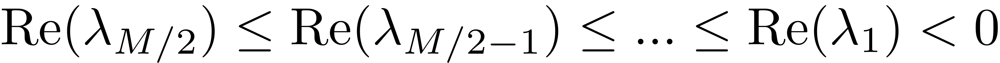
Note that the above procedure is valid for any general damping matrix and reduces to the computation of the conservative eigenmodes when is simultaneously diagonalisable with the mass and stiffness matrices, e.g., in the case of proportional damping.
The one-dimensional vector spaces that correspond to the span of the eigenvectors are invariant under the linear part of the dynamics. The reduced model associated to the chosen linear subspace 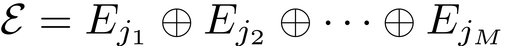 via projection of the linear system is thus exact. This subspace is often called the master spectral subspace on which the linear part of the full dynamics can be analysed. The eigenvalues in the spectrum of the master subspace, denoted as 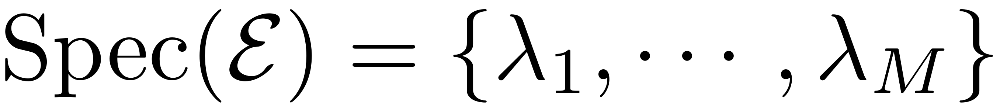, are collected in the vector 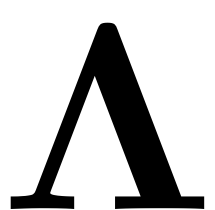. The master-eigenvectors are normalised such that 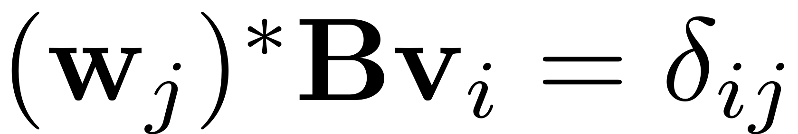.
Existence and computation of SSMs
When adding nonlinearities, the flat invariant subspace  does not remain invariant. Model reduction onto this subspace thus should not be performed anymore as trajectories within this subspace do not correspond to full system trajectories. A linear projection may kill essential nonlinear couplings and thus predict wrong behaviour of the reduced system even on a qualitative level, including the emergence of non-physical fixed points - we illustrate this phenomenon in a small example. This is where the computation of nonlinear invariant manifolds becomes relevant. As these manifolds are invariant, properties of the ROM such as periodic orbits and invariant tori as well as bifurcations that are found are guaranteed to exist in the full physical system. Encountering an invariant torus on an invariant manifold thus directly implies that an invariant torus of the full system has been found.
does not remain invariant. Model reduction onto this subspace thus should not be performed anymore as trajectories within this subspace do not correspond to full system trajectories. A linear projection may kill essential nonlinear couplings and thus predict wrong behaviour of the reduced system even on a qualitative level, including the emergence of non-physical fixed points - we illustrate this phenomenon in a small example. This is where the computation of nonlinear invariant manifolds becomes relevant. As these manifolds are invariant, properties of the ROM such as periodic orbits and invariant tori as well as bifurcations that are found are guaranteed to exist in the full physical system. Encountering an invariant torus on an invariant manifold thus directly implies that an invariant torus of the full system has been found.
Spectral Submanifolds (SSM) can be interpreted as the nonlinear (and non-autonomous) analogon of invariant spectral subspaces for nonlinear systems. These nonlinear invariant manifolds are tangent to given spectral subspaces and perturb smoothly from them in the magnitude of the nonlinearity. The dynamics on a SSM are called the reduced dynamics and due to the invariance of the SSM serve as an exact reduced order model (ROM) of the full system. The existence of SSMs rests on a set of non-resonance conditions, as any resonance between two modes will disallow their separation when computing the respective invariant manifolds. Details on the handling of systems with resonances can be found here and in Li et al., 2022 Li & Haller 2022. The degree of smoothness at which SSMs become unique is also coupled to the spectrum of the linear part of the dynamical system, more details on this are provided here and in Haller & Ponsioen, 2016, Ponsioen Pedergnana & Haller, 2018.
Before we proceed to compute such invariant manifolds and use them for model reduction, however, it is essential to guarantee that the objects that we are looking for, do really exist. Haller & Ponsioen, 2016 establish the existence and uniqueness of SSMs under certain non-resonance conditions. Before computing an SSM, these conditions have to be checked, to guarantee that the SSM exists. If its existence is not guaranteed, then it is also not guaranteed that the computed ROM lives in an invariant subspace of the full physical space and model reduction to this ROM looses its mathematical justification.
Autonomous SSM
Consider the 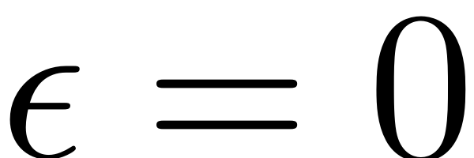 limit of the dynamical system, ie. the autonomous case. We define the relative spectral quotient as

It is the relation of the smallest real part of an eigenvalue outside the master subspace to the eigenvalue in the subspace with largest real part. More details on the interpretation of this coefficient are provided in Resonances. Formally the existence of autonomous SSMs attached to a fixed point and tangent to a spectral subspace of an autonomous dynamical system is guaranteed by the following theorem (Haller & Ponsioen, 2016).
Theorem (Autonomous SSM)
For all 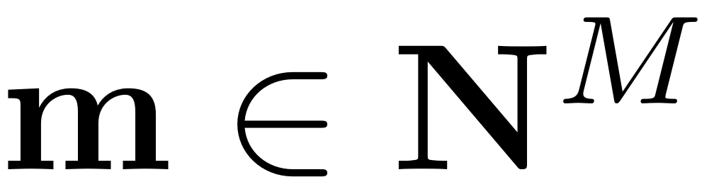 with 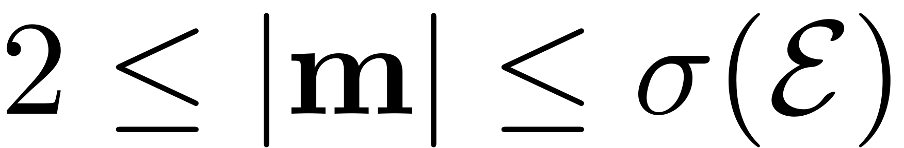 assume the non-resonance conditions
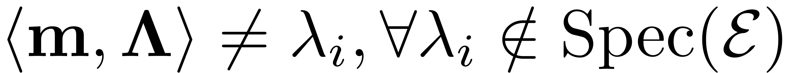
that is, for all eigenvalues 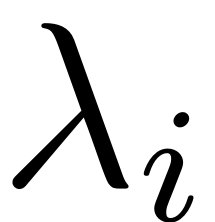 that lie outside the spectrum of . Then the following statements hold
- There exists a class 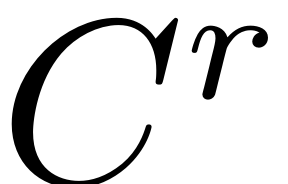 SSM, 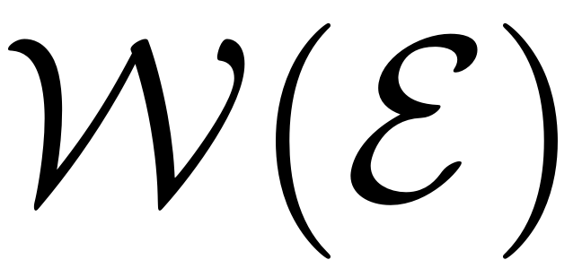, tangent to at the trivial equilibrium point
 . Furthermore 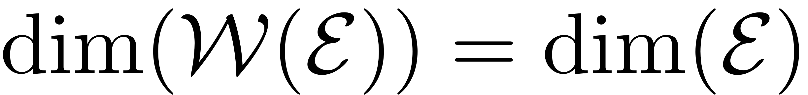.
. Furthermore 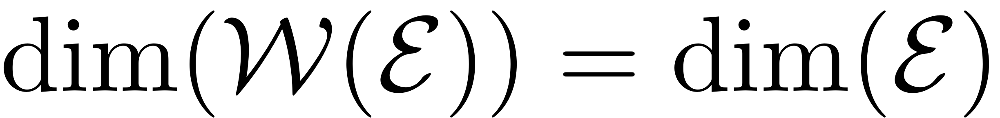.  is unique among all 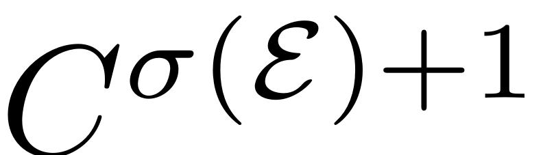 invariant manifolds with the properties listed in 1.
is unique among all 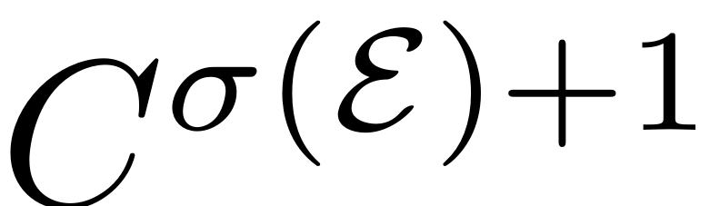 invariant manifolds with the properties listed in 1.- If is jointly in and an additional parameter vector , then the SSM is also jointly in and .
The third point guarantees the existence of the SSMs for arbitrary magnitudes of the nonlinearity. Therefore the technique presented here does not leverage on any assumption concerning the magnitude of the nonlinearity, such as eg. perturbation techniques.
The components orthogonal to the slowest SSM decay onto the manifold for all trajectories in a neighbourhood of the stable fixed point of interest. The parallel components synchronise with the reduced dynamics on the SSM, hence they constitute a predictive ROM for the full system. If transient response is of interest, then intermediate SSMs may be constructed to observe the system. As SSMs are invariant, any dynamics on them is also guarenteed to exist in the full system.
The following figure (cf. Jain & Haller, 2021) depicts, how such an SSM is represented via a parametrisation. It is given by a map that maps the 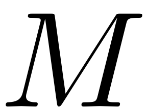 parametrisation coordinates onto a - dimensional manifold 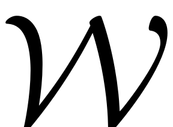 in full phase space. This manifold is tangent to the master spectral subspace . The reduced dynamics on the SSM are represented by and constitute an exact ROM for the full system. Due to the invariance, any trajectory of the reduced dynamics in the parametrisation space is mapped onto a trajectory on on the full phase space. For an explanation on the computation of the SSM and the reduced dynamics see Computation of SSMs. For more explanations on the choice and importance of refer to Resonances.

Non-autonomous SSMs
The autonomous treatment of SSMs can be extended if the dynamical system is driven via time dependent forcing terms. We consider quasiperiodic (possibly parametric) excitation of the form 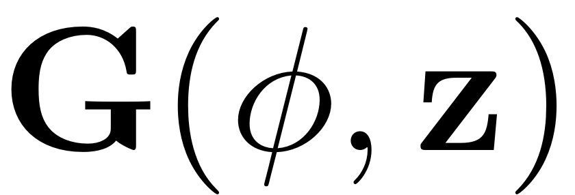. The (quasi)-periodic phase variable 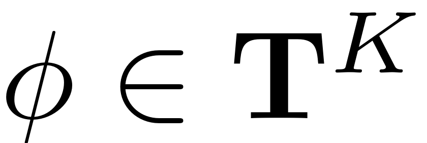 introduces time dependence via the dynamical set of equations 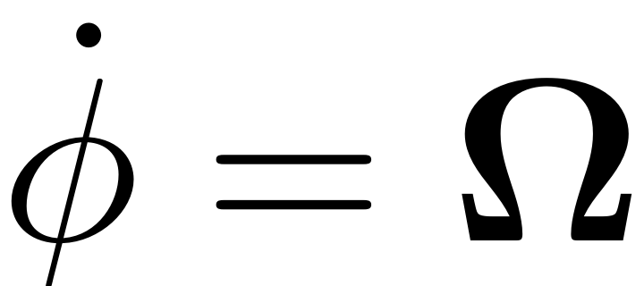. The vector 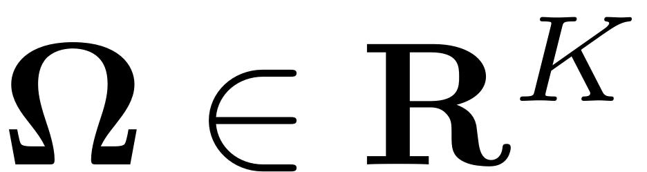 is the frequency vector and gives the basis of the quasiperiodic excitation with 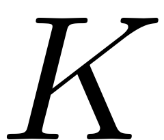 incommensurate frequencies. As a result the dynamical system reads
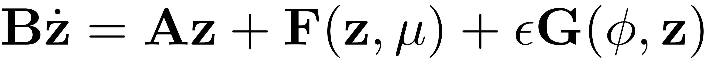
For small enough excitation amplitude the trivial fixed point of the autonomous system perturbs smoothly into an invariant torus 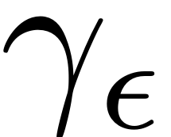 as  is increased (cf. Guckenheimer & Holmes, 1983).
is increased (cf. Guckenheimer & Holmes, 1983).
Instead of being attached to the trivial fixed point 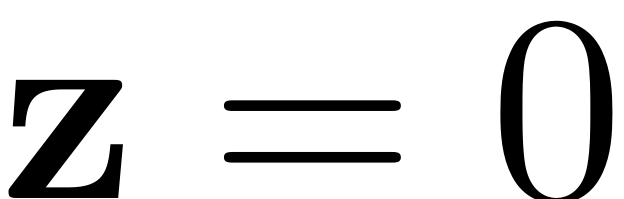 the now non-autonomous SSM sticks to the invariant Torus .
The SSM stays attached to this torus at its base and thus starts to move in phase space in a quasiperiodic fashion. In mathematical terms, the tangency to in the autonomous case implies that the non-autonomous SSM is tangent to the spectral subbundle 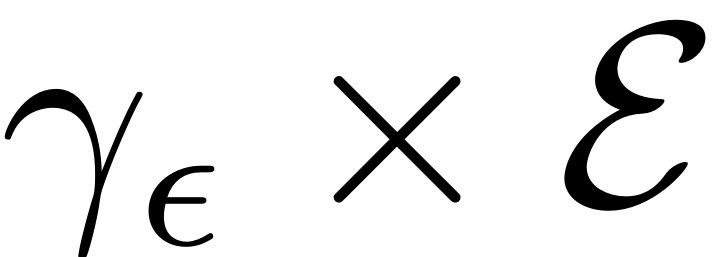. Furthermore the manifold also starts to deform quasiperiodically. The existence of the non-autonomous SSM builds on non-resonance conditions similar to the autonomous manifold. The absolute spectral quotient which determines the degree of smoothness, beyond which the SSM is unique, is defined as
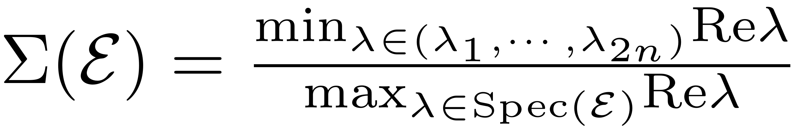
It differs from the relative quotient insofar that it includes the minimum over the full eigenvalue spectrum, also including the eigenvalues which are in the master spectrum. Commonly the slowest modes are of interest in practical applications. These tend to show the weakest dissipative behaviour and thus have eigenvalues with the lowest real part. Hence uniqueness of the non-autonomous manifold for those SSMs sets in at possibly higher orders than for the autonomous manifold. The existence and uniqueness of these non-autonomous manifolds in general is established in the succeeding theorem by Haller & Ponsioen, 2016.
Theorem (Non-autonomous SSM)
For all with 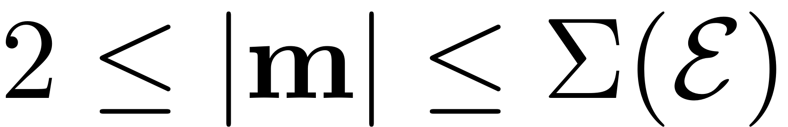 assume the non-resonance conditions
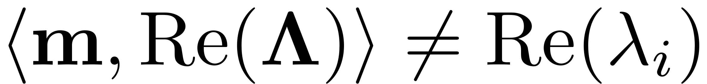
for all eigenvalues outside of the master subspace, so 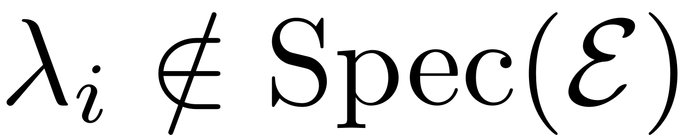. Then the following is true
- There exists a unique, quasiperiodic,
 SSM, 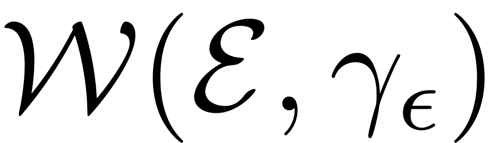, which perturbs smoothly in . Furthermore 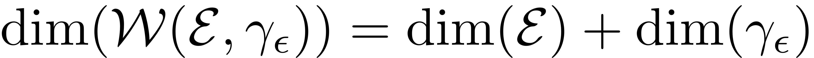.
SSM, 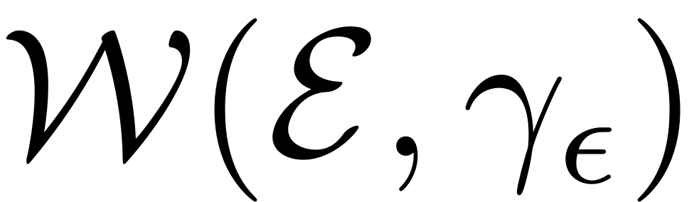, which perturbs smoothly in . Furthermore 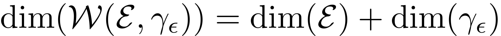. - can be described by a parametrization from an open set 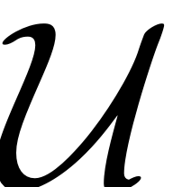 onto the phase space of the full system.
- There exists a vector field 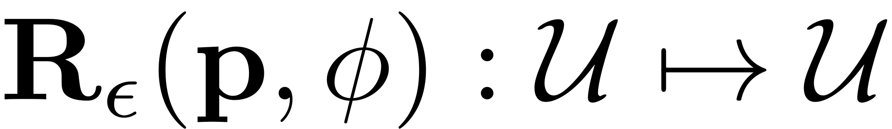 which satisfies the invariance equation 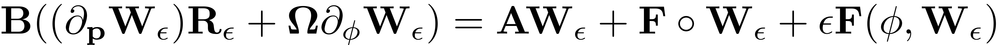 and gives the reduced dynamics on the SSM: 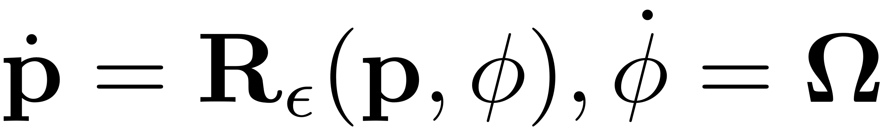
For the derivation of this invariance equation and further mathematical details please refer to the SSM-Computations page. It is thus our task to compute a mathematical presentation of the manifold parametrisation 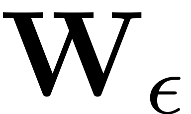 and the reduced dynamics 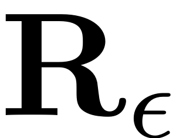. Consequently these can then be used for further analysis, for instance the computation of backbone curves, Forced Response Curves, continuation of the reduced dynamics or stability diagrams.
In the following figure (cf. Jain & Haller, 2021), the parametrisation of such a non-autonomous SSM and the reduced dynamics on it are visualised schematically. The parametrisation space (yellow) consists of a direct product of 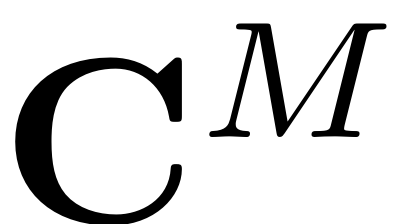, which contains the spacial parametrisation coordinates, with the - dimensional torus , which includes the temporal variables. The parametrisation then maps this direct product onto the invariant, non-autonomous manifold (blue) in the full, non-autonomous phase space. The spatial euclidian coordinates of this phase space are represented with a gray rectangle. At each instance in time, the non-autonomous SSM  is tangent to the master subspace (green). The temporal evolution of the manifold parametrisation implies that, as time passes, the SSM stays tangent to the subbundle . The SSM furthermore deformes in a quasiperiodic manner, according to the frequencies and harmonics present in the external excitation.
is tangent to the master subspace (green). The temporal evolution of the manifold parametrisation implies that, as time passes, the SSM stays tangent to the subbundle . The SSM furthermore deformes in a quasiperiodic manner, according to the frequencies and harmonics present in the external excitation.